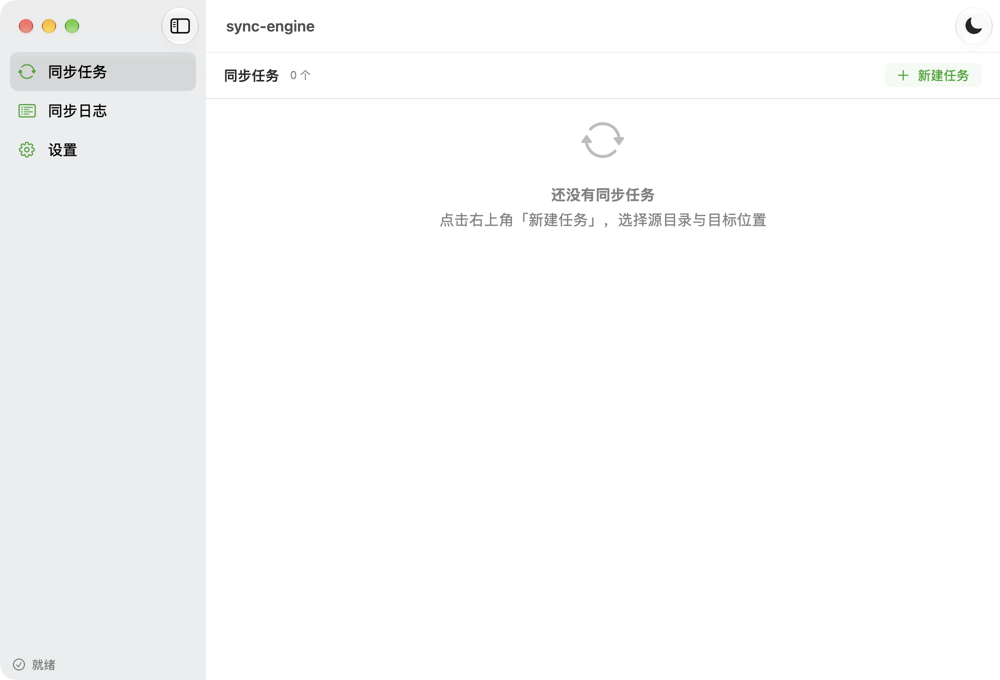
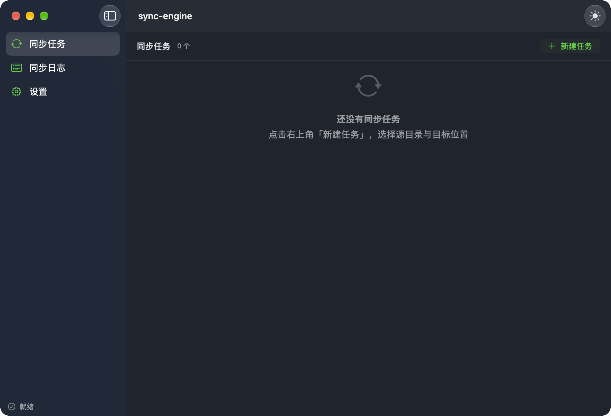

截图
实际界面
以下截图取自真实运行的 v1.0.0 构建，非设计稿。主题支持浅色 / 深色 / 跟随系统。


#32CD32，在深色底上对比度约 7.9:1。
macOS 原生 · SwiftUI + Swift · 零第三方依赖
用 SHA-256 内容指纹而不是修改时间判断变更 —— 外接盘常是 FAT／exFAT（时间戳精度只有 2 秒）， 时钟也会漂移，靠时间戳判变更必然出错。目标端支持本地目录、SMB 与 WebDAV。
下面每一条都是可验证的已实现功能。尚未实现的部分在「进度」一节里逐条列明。
逐文件 SHA-256，用内容而非时间戳判断是否改动。时间戳只用来缩小候选范围，不参与最终裁决。
多核并行、滑动窗口控制内存。实测 6.3 GB 目录树上 10 路并发比串行快 4.2 倍（283 → 1179 MB/s）。
路径逃逸双重校验：词法归一化 + 软链接解析，且校验目标自身而非只校验父目录。
走系统 NetFS 框架挂载后复用本地驱动，读写语义与本地目录天然一致。自动复用已挂载的卷，不重复挂载。
URLSession 直发 PROPFIND／PUT／MKCOL／DELETE，自写 multistatus 解析。Basic／Digest 认证，可选中放行自签名证书。
任务结构里只保存用户名，密码不落配置文件、不进日志、不出现在崩溃报告里。
以下截图取自真实运行的 v1.0.0 构建，非设计稿。主题支持浅色 / 深色 / 跟随系统。


#32CD32，在深色底上对比度约 7.9:1。
v1.0.0 的功能并不完整。把这一点写清楚，比让用户下载后才发现更有价值 —— 未实现的部分在应用界面上也有同样的标注。
只需 Command Line Tools，不需要打开 Xcode。
# 克隆并构建 git clone https://github.com/zdx8/SyncEngine-macOS.git cd SyncEngine-macOS/SyncApp swift build # 构建 swift test # 单元测试（76 项） bash Scripts/build_app.sh # 打包成 dist/sync-engine.app open dist/sync-engine.app # 运行 # 打发行版安装包（版本号取自 build_app.sh，不在两处维护） bash Scripts/make_dmg.sh 1.0.0 arm64 bash Scripts/make_dmg.sh 1.0.0 x86_64
# 跑的是打包产物本身 —— 即用户拿到的那个二进制 dist/sync-engine.app/Contents/MacOS/sync-engine --selfcheck # 性能基准：指定并发度 dist/sync-engine.app/Contents/MacOS/sync-engine --bench ~/目录 10
这个项目的验证原则是：任何结论都要由可机器判定的证据支撑，而不是「看起来对」。
| 层 | 手段 | 覆盖 |
|---|---|---|
| 引擎逻辑 | swift test（76 项） |
哈希向量、扫描统计、软链策略、路径逃逸、计时不变量、错误路径 |
| 存储驱动 | swift test（真实 IO） |
对进程内真实 WebDAV 服务端做完整往返；对真实 SMB 挂载做只读验证 |
| 交付产物 | --selfcheck（16 项） |
真实 .app 内那份二进制能否跑通引擎与驱动接线 |
| 界面渲染 | 单窗口截图 + 位图像素分析 | 主题一致性、强调色是否统一、内容是否真的画出来了 |
两条值得一提的做法：断言只验结构性不变量（如「分项耗时之和 ≤ 总耗时」）， 不验机器相关的具体数值 —— 后者必然变成 flaky 测试； 以及只在某条操作路径上出现的缺陷，必须把那条路径本身做成可复现的 （例如「运行中切换主题」无法靠静态启动验证，因此应用内置了走同一入口的诊断钩子）。